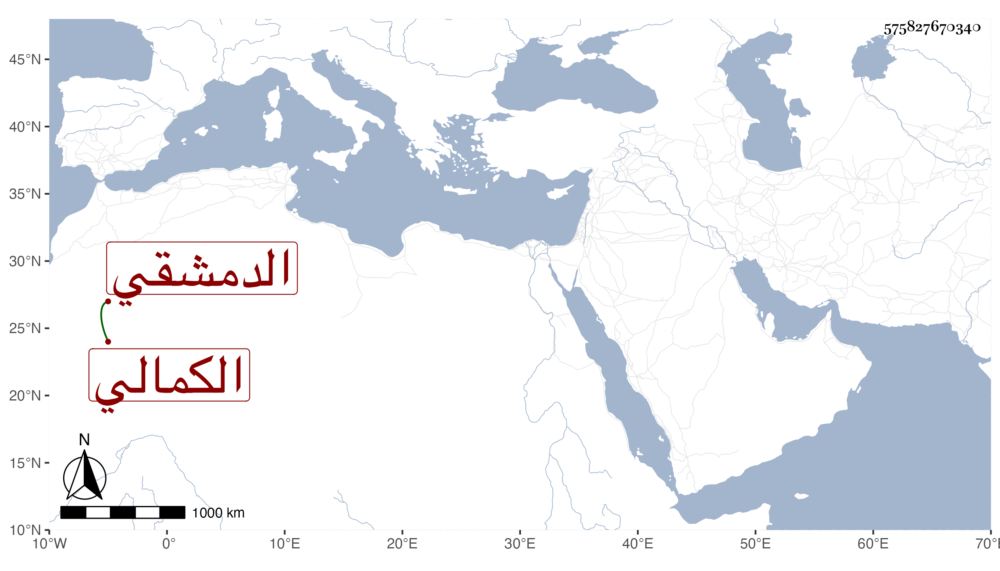

0902Sakhawi.DawLamic.ITO20230111-ara1.EIS1600.575827670340
Biography ID: 575827670340
193
محمد بن عبد الله بن طغاي ناصر الدين الدمشقي الكمالي لملازمته خدمة الكمال بن البارزي في حياة أبيه وانقطاعه له بحيث حظى عنده وحصل بجاهه أموالا جمة وجهات عدة وحج غير مرة وبعده لزم بيته منعزلا عن الناس إلا نادرا فلما تملك الظاهر خشقدم لزمه واختص به وتكلم معه في حوائج الناس فازدحموا على بابه وزادت وجاهته وأمواله مع سلوكه التواضع ووقوفه مع قدره إلى أن قبض عليه في سنة سبعين وصادره على مال جم وصرح بالحط عليه وتعداد مساوئ له وأنه لو سمع منه لأخرب المعلكة أو نحو ذلك واقتدى به في مصادرته بعده الأشرف قايتباى بعد تقريبه له أيضا واختفى منه ثم ظهر ولزم بيته حتى مات في يوم الاثنين سابع عشرى ذي القعدة سنة اثنتين وثمانين فجأة وصلى عليه من الغدو دفن وأظنه جاز السبعين وخلف صغارا وكان عاقلا متدينا فيه بر واحسان لبعض الفقراء وتواضع سيما في حال انقطاعه أدب عفا الله عنه ورحمه وإيانا.
